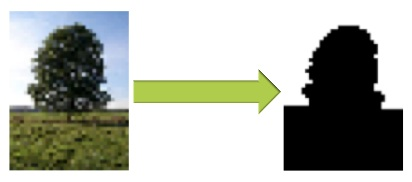
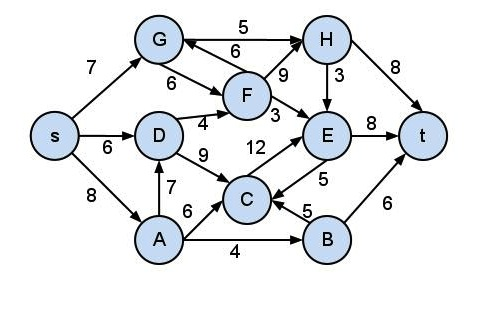

CS205 Harvard University Fall 2012
by Joshua Lee and Mona Huang
For our final project, we implemented parallel version of the serial Ford-Fulkerson algorithm for finding the Max-Flow and Min-Cut of a directed graph using MapReduce and MPI. We then used this to implement a program for binary image segmentation. Code for our project can be found here and program usuage can be found here.
An example of our binary image segmentation output:
In a directed graph with edge weight capacities, the maximum flow is the maximum amount of capacity that can pass from the source node to the sink node. In the example below, the maximum flow is 21.
Equivalently, the maximum flow problem can be interpreted as finding the minimum cut. The minimum cut is the set of edges with the smallest aggregate weight that can be removed from the graph so that no path exists from the source to the sink. In the graph below, the minimum cut is the set of edges SG, SD, SA.
There are several applications of the Max-Flow Min-Cut algorithm, including scheduling problems, bipartite graph selection problems, and optimization problems. For our project, we focused on the application of the Max-Flow Min-Cut algorithm for binary image segmentation.
Binary image segmentation is the process of separating the background and foreground of an image. We can reduce binary image segmentation to max-flow using the following reduction. From the original image file, create a graph in which each pixel is converted into a vertex and create directed edges between all adjacent pixels with edge capacity p_ij. We also introduce a super source “s” and super sink “t”. We introduce directed edges from “s” to all pixel vertices with capacity a_i and directed edges from all pixel vertices to “t” with capacity b_i.
We define the edge capacities as follows. a_i is the probability that pixel i belongs to the foreground. b_i is the probability that pixel i belongs to the background. p_ij is the penalty of separating pixels i and j in the cut. In our algorithm, we use a very simple model for these edge weights. a_i and b_i just correspond to the image intensity of pixel i. p_ij is given by the relative difference in pixel intensities of i and j.
We run the max flow algorithm on this new graph. By the Max-Flow Min-Cut theorem, this max flow corresponds to a minimum cut. The minimum cut gives us two sets of pixels, one connected to the source (call it A) and one connected to the sink (call it B). We can label all pixels in A as the foreground and all pixels in B as background.
The graphs created by our conversion can become quite large. In a standard 18 mega pixel image, this results in a graph of approximately 18 million vertices and 150 million edges. A graph of this size would require 2GB of space to store. This example is indicative of the scale of most real-life applications of the Max-Flow Min-Cut algorithm. By creating a parallel version of the Max-Flow Min-Cut algorithm, we hope to conquer many of the speed constraints that are a result of the serial algorithm, as well as provide a solution for running the Max-Flow Min-Cut algorithm on graphs that are too large to fit in one file.